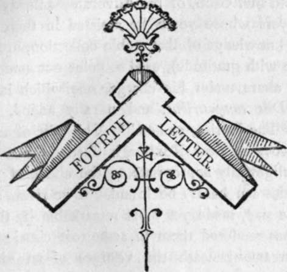

Fourth Letter
Description
This section is from the book "Letters On Demonology And Witchcraft", by Walter Scott. Also available from Amazon: Letters On Demonology & Witchcraft.
Fourth Letter
The Fairy Superstition is derived from different Sources—The Classical Worship of the Silvans, or Rural Deities, proved by Roman Altars discovered—The Gothic Duergar, or Dwarfs— supposed to be derived from the Northern Laps, or Fins—The Niebelungen-Lied—King Laurin's Adventures—Celtic Fairies of a gayer cliaracter, yet their pleasures empty and illusory— Addicted to carry off Human Beings, both Infants and Adults —Adventures of a Butler in Ireland—The Elves supposed to pay a Tax to Hell—The Irish, Welsh, Highlanders, and Manxmen, held the same belief—It was rather rendered more gloomy by the Northern Traditions—Merlin and Arthur carried off by the Fairies—also Thomas of Erceldoune—His Amour with the Queen of Elfland—His reappearance in latter times—another Account from Reginald Scot—Conjectures on the derivation of the word Fairy.
WE may premise by observing that the classics had not forgotten to enrol in their mythology a certain species of subordinate deities, resembling the modern elves in their habits. Good old Mr. Gibb, of the Advocates' Library (whom all lawyers whose youth he assisted in their studies by his knowledge of that noble collection, are bound to name with gratitude), used to point out amongst the ancient altars under his charge, one which is consecrated Diis campestribus, and usually added, with a wink, " The Fairies, ye ken."* This relic of antiquity was discovered near Roxburgh Castle, and a vicinity more delightfully appropriate to the abode of the silvan deities can hardly be found. Two rivers of considerable size, made yet more remarkable by the fame which has rendered them in some sort classical, unite their streams beneath the vestiges of an extensive castle, renowned in the wars with England, and for the valiant, noble, and even royal blood, which has been shed around and before it; —a landscape, ornamented with the distant village and huge abbey tower of Kelso, arising out of groves of aged trees ;—the modern mansion of Fleurs, with its terrace, its woods, and its extensive lawn, form altogether a kingdom for Oberon and Titania to reign in, or any spirit who, before their time, might love scenery of which the majesty, and even the beauty, impress the mind with a sense of awe mingled with pleasure. These silvans, satyrs, and fauns, with whom superstition peopled the lofty banks and tangled copses of this romantic country, were obliged to give place to deities very nearly resembling themselves in character, who probably derive some of their attributes from their classic predecessors, although more immediately allied to the barbarian conquerors ; we allude to the fairies, which, as received into the popular creed, and as described by the poets who have made use of them as machinery, are certainly among the most pleasing legacies of fancy.
* Another altar of elegant form, and perfectly preserved, was, within these few weeks, dug np near the junction of the Leader and the Tweed, in the neighbourhood of the village of Newstead, to the east of Melrose. It was inscribed by Carrius Domitianus, the prefect of the twentieth legion, to the god Sylvanus ; forming another instance how much the wild and silvan character of the country disposed the feelings of the Romans to acknowledge the presence of the rural deities. The altar is preserved at Drygrange, the seat of Mr. Tod.
Dr. Leyden, who exhausted on this subject, as on most others, a profusion of learning, found the first idea of the Elfin people in the northern opinions concerning the Duergar, or dwarfs.* These were, however, it must be owned, spirits of a coarser sort, more laborious vocation, and more malignant temper, and in all respects less propitious to humanity, than the fairies, properly so called, which were the invention of the Celtic people, and displayed that superiority of taste and fancy which, with the love of music and poetry, has been generally ascribed to their race, through its various classes and modifications.
In fact, there seems reason to conclude that these duergar were originally nothing else than the diminutive natives of the Lappish, Lettish, and Finnish nations, who, flying before the conquering weapons of the Asae, sought the most retired regions of the north, and there endeavoured to hide themselves from their eastern invaders. They were a little, diminutive race, but possessed of some skill probably in mining or smelting minerals, with which the country abounds; perhaps also they might, from their acquaintance with the changes of the clouds, or meteorological phenomena, be judges of weather, and so enjoy another title to supernatural skill. At any rate, it has been plausibly supposed that these poor people, who sought caverns and hiding-places from the persecution of the Asa?, were in some respects compensated for inferiority in strength and stature by the art and power with which the superstition of the enemy invested them. These oppressed, yet dreaded, fugitives obtained, naturally enough, the character of the German spirits called Ko-bold, from which the English Goblin and the Scottish Bogle, by some inversion and alteration of pronunciation, are evidently derived.
* See the Essay on the Fairy Superstition, in the Minstrelsy of the Scottish Border, of which many of the materials were contributed by Dr. Leyden, and the whole brought into its present form by the author.
The Kobolds were a species of gnomes, who haunted the dark and solitary places, and were often seen in the mines, where they seemed to imitate the labours of the miners, and sometimes took pleasure in frustrating their objects, and rendering their toil unfruitful. Sometimes they were malignant, especially if neglected or insulted ; but sometimes also they were indulgent to individuals whom they took under their protection. When a miner, therefore, hit upon a rich veir of ore, the inference commonly was, not that he possessed more skill, industry, or even luck, than his fellow workmen, but that the spirits of the mine had directed him to the treasure. The employment and apparent occupation of these subterranean gnomes, or fiends, led very naturally to identify the Fin or Laplander, with the Kobold ; but it was a bolder stretch of the imagination which confounded this reserved and sullen race with the livelier and gayer spirit which bears correspondence with the British fairy. Neither can we be surprised that the Duergar, ascribed by many persons to this source, should exhibit a darker and more malignant character than the elves that revel by moonlight in more southern climates.
Continue to: